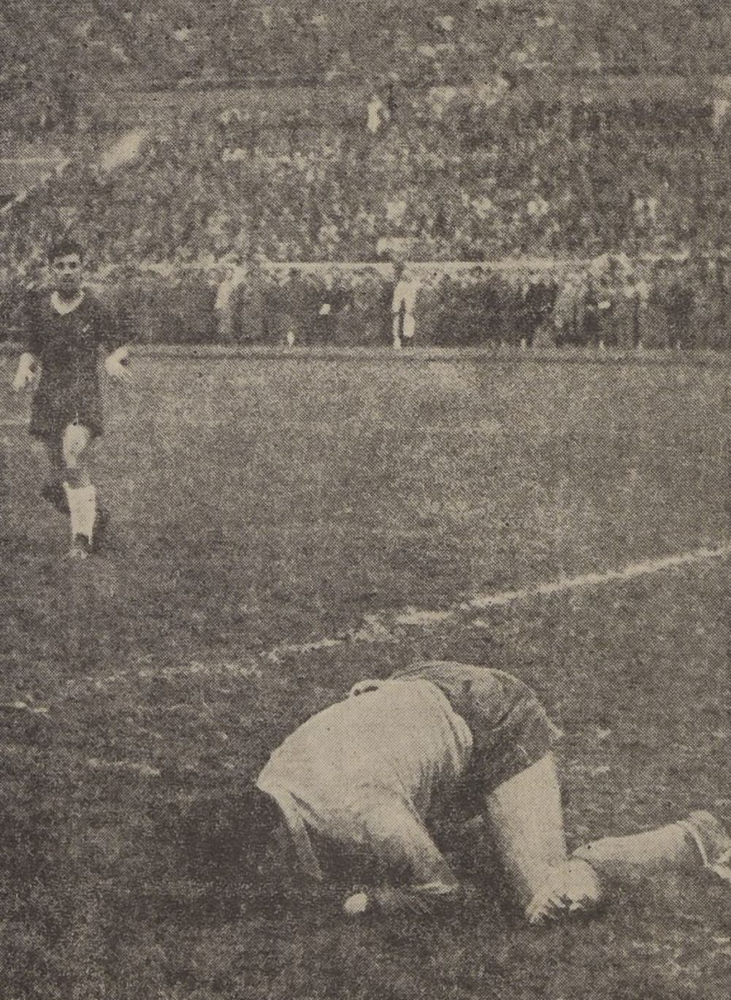

Wonslimpiadas 2027
- Apóstoles de Nashito
- Los Loleros
- Callampa FC
- Deportes Chuchunco City
- Enanito FC
- Orgullo CDF
- Wons United
Fecha por confirmar
Lugar por confirmar
7 equipos, 6 pruebas
Siete equipos, una sola copa. Wons 4 ever.

Fecha por confirmar
Lugar por confirmar
7 equipos, 6 pruebas
Siete equipos, una sola copa. Wons 4 ever.


Cada equipo tiene su planilla. Se llena prueba a prueba durante el día, a la vista de todos.
Integrantes y colores se confirman antes del pitazo inicial.
En vivo Cargando la tabla…